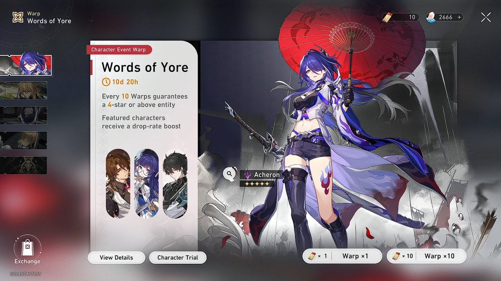
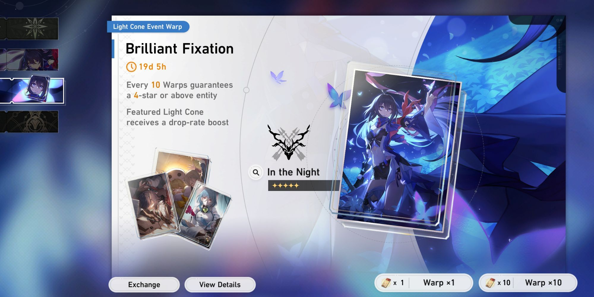
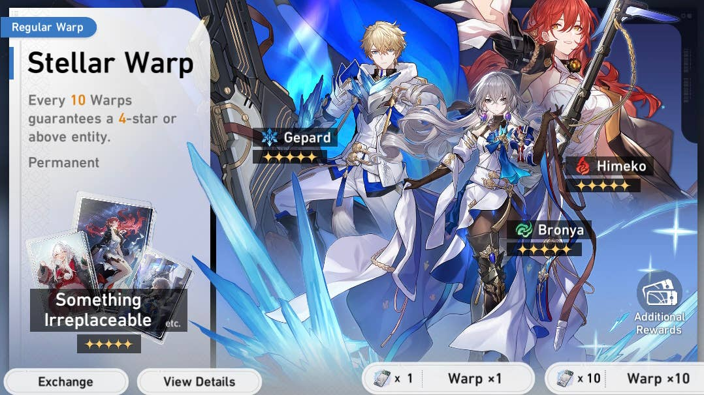

Gacha System
Honkai: Star Rail uses a gacha system as the primary way for a player to obtain new Characters and Light Cones. It is generally the only way to obtain the highest rarity Characters and Light Cones.
Banner Types
In Honkai Star Rail, acquiring new characters and powerful Light Cones (weapons) is done through a gacha system called "Warps." Here's a breakdown of the different Warp types:
Character Event Warp (Limited)
This Warp features a newly released character with a boosted chance to obtain them.
It's a temporary banner lasting for the duration of the character's event.
This is your best chance to get the new character but requires specific "Special Passes" for pulls.
It offers a pity system - after a certain number of pulls (usually 90), you're guaranteed a 5-star character, most likely the featured one.
Light Cone Event Warp (Limited)
Similar to Character Event Warp, this banner features a new Light Cone with a boosted chance to get it.
It's also temporary and requires Special Passes for pulls.
Light Cone Event Warp has a pity system where after a set number of pulls (usually 80), you're guaranteed a 5-star Light Cone.
Regular Warp (Permanent)
Also known as "Stellar Warp," this is the permanent banner available year-round.
It features a pool of all characters and Light Cones (excluding limited ones).
You can use regular "Passes" for pulls here.
The pity system works similarly, guaranteeing a 5-star character or Light Cone after a set number of pulls (usually 90).
However, the character or Light Cone you get won't be guaranteed to be new or specific.